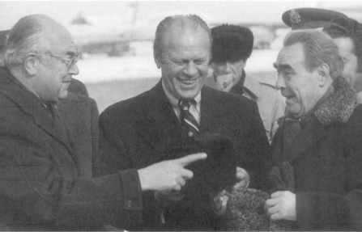

Gerald Ford, Anatoli Dobrinin (Solda) ve Leonid Brejnev’le, Vladivostok, 1974
Vietnam’ın moral bozucu kan banyosundan Birleşik Devletler’i kurtararak ve ulusun dikkatini daha geniş uluslararası sorunlara çekerek, Nixon Yönetimi şatafatlı bir şekilde “barış yapısı” denen bir yapı kurmaya çalıştı. Birleşik Devletler, SSCB ve Çin arasındaki üçlü bir ilişki bir dizi önemli hamleye kapıyı açtı: Vietnam Savaşı’nın sona erdirilmesi; bölünmüş Berlin’e girişi güvence altına alan bir anlaşma; Sovyetlerin Ortadoğu’daki nüfuzunun büyük ölçüde azaltılması ve Arap-Israil barış sürecinin başlaması ve Avrupa Güvenlik Konferansı (Ford yönetimi zamanında tamamlandı). Bu olayların her biri, diğerlerinin gerçekleşmesine yardımcı oldu. Bağlantı politikası büyük bir başarıyla işliyordu.
Yumuşama (Detente), 1961’de Doğu-Batı nüfuz kürelerinin nihai olarak oluşturulmasıyla tam anlamıyla durgunlaşmış olan Avrupa diplomasisine yeni bir akıcılık getirdi. 1969 Eylülü’nde Willy Brandt başbakan olarak seçilene kadar birbirini izleyen bütün Alman hükümetleri, tek meşru Alman hükümetinin Bonn’daki hükümet olduğunda ısrar etmişti. Federal Cumhuriyet Doğu Alman rejimini tanımayı reddetti ve Rusya hariç, bu devleti tanıyan bütün hükümetlerle diplomatik ilişkisini kesti. Buna Hallstein Doktrini deniyordu.
1961’de Berlin Duvarı kurulduktan sonra, Almanya’nın birleştirilmesi sorunu Doğu-Batı görüşmeleri gündeminden yavaş yavaş kayboldu ve Almanya’nın birleşme arzusu geçici olarak buzdolabına kaldırıldı. Bu yıllar boyunca, de Gaulle, Doğu Avrupa ile “yumuşama, antant ve işbirliği” politikası dediği bir politikayı ilan ederek, Amerika’dan bağımsız olarak Moskova ile görüşme olasılığını araştırdı. De Gaulle, Moskova, Avrupa’yı, Amerika’nın uydusu olarak değil de, özgür ülkeler olarak algılarsa, Kremlin’deki liderlerin, Çin sorunu da göz önüne alındığında, Doğu Avrupa’daki egemenliğini biraz gevşetmeye ikna edilebilir ümidindeydi. De Gaulle, Batı Almanya’nın bir dereceye kadar kendisini Washington’dan ayırmasını ve Sovyetlere karşı yaklaşımında Fransa’yı izlemesini istiyordu.
De Gaulle doğru bir analiz yapmıştı; fakat daha akıcı bir uluslararası durumdan yararlanmakta Fransa’nın olanaklarını olduğundan çok tahmin etmişti. Federal Almanya sırtını kuvvetli Amerika’ya dönmek niyetinde değildi. Bununla beraber, de Gaulle’ün düşüncesi bazı Alman liderlerini etkiledi ve bunlar Fransa’nın sahip olmadığı pazarlık kozlarına Federal Cumhuriyet tarafından sahip olunabileceğini düşünüyorlardı. General yemi attığı zaman, Brandt Alman dışişleri bakanıydı ve de Gaulle’ün görüşünün etkilerini anlamıştı. De Gaulle’ün inisiyatifini destekleyen Almanlar için şunları söylüyordu:
“Onlar, generalin Avrupa’da bir nükleer caydırıcı güç kurulması düşlerinin peşinde olmadığını kavramakta başarısız oldular. (General Almanya’nın buna katılmasını kuvvetle reddetmişti.) Aynı zamanda, generalin, Birliğin (Alman Muhafazakâr Partisi) sağ kanadının hiçbir zaman desteklemeyeceği bir yumuşama politikası geliştirmek istediğini ve bizim Ostpolitik için birçok bakımdan yolu açtığı gerçeğini fark edemediler.”{987}
Sovyetlerin 1968’de Çekoslovakya’yı işgali, de Gaulle’ün inisiyatifini sona erdirdi; fakat şaşılacak bir şekilde Brandt 1969’da Batı Alman başbakanı olduğu zaman, onun için kapıyı açtı.
Brandt, herkesi şaşırtan bir tez ileri sürdü: Batı’ya dayanmak hareketsizlik yarattığına göre, iki Almanya’nın birleşmesi, Almanya’nın komünist dünya ile yakınlaşmasında aranmalıdır. Ülkesini, Doğu Alman uydusunu tanımaya, Polonya ile olan sınırım (Oder-Neisse Hattı) kabul etmeye ve Sovyetler Birliği ile ilişkileri geliştirmeye zorladı. Doğu-Batı ilişkileri yumuşayınca, Sovyetler Birliği de iki Almanya’nın birleşmesi sorununa daha az katı bir şekilde bakabilirdi. En azından Doğu Alman halkının yaşam şartları düzelebilirdi.
Başlangıçta, Nixon Yönetimi’nin, Brandt’m Ostpolitik dediği şeye karşı ciddi çekinceleri vardı. Birbirlerini kandırmaya çalışan iki Alman devleti, Adenauer ve de Gaulle’ün korktuğu gibi bir ulusal ve tarafsız program üzerinde sonunda anlaşmaya varabilirlerdi. Federal Cumhuriyet daha çekici politik ve sosyal sisteme sahipti; komünistler ise devletleri bir kez tanınırsa bundan geri dönülemeyeceği ve birleşmenin anahtarını taşıyacağı avantajına sahipti. Hepsinden önemlisi, Nixon Yönetimi, Batı’nın birliğinden endişe ediyordu. De Gaulle, Fransa’yı NATO’dan çekmek ve Kremlin’le kendi yumuşama politikasının izlemek suretiyle Moskova’ya karşı Batı’nın birleşik cephesini zaten kırmıştı.
Yine de Brandt’m inisiyatifi hız kazandıkça, Nixon ve arkadaşları, Ostpolitik’in tuzaklarına karşın bunun alternatifinin daha riskli olduğu sonucuna vardılar. Zaten Hallstein Doktrini’nin ayakta tutulamayacağı ortaya çıkmıştı. 1960’lı yılların ortasında, Bonn’un kendisi Doğu Avrupa’nın komünist hükümetlerinin kendi kararlarını kendilerinin verebileceği kadar özgür olmadıkları gibi bir argümanı değiştirdi.
Ancak problem daha derine gidiyordu. 1960’lı yıllarda, Moskova’nın Doğu Alman uydusunun çökmesine çok büyük bir kriz olmadan izin vereceği iddiası akıl almaz bir iddiaydı. Almanya’nın kendi ulusal istekleri üzerindeki ısrarı sonucu ortaya çıkacak veya makul bir biçimde böyle ortaya konabilecek herhangi bir kriz ise, Batı ittifakını parçalamak için kuvvetli bir potansiyele sahipti. Hiçbir müttefik, savaş zamanı çektiklerinin nedeni olan bir ülkenin birleştirilmesi yüzünden savaş tehlikesini göze almak istemedi. Nikita Kruşçev Berlin’e giriş yollarını Doğu Alman komünistlerine devretmekle tehdit ettiği zaman kimse barikatlara koşmadı, istisnasız Batılı müttefikler, Berlin’i bölen ve Almanya’nın bölünmesini sembolize eden duvarın inşasına rıza gösterdiler. Yıllarca demokrasiler, bu konuda fiilen hiçbir şey yapmadan Almanya’nın birleşmesi konusuna sahte bir ilgi gösterdiler. Bu politika artık seçeneklerinin sonuna gelmişti. Atlantik İttifakı’nın Alman politikası çöküyordu.
Nixon ve danışmanları, Adenauer’m tersine Brandt’ın hiçbir zaman Atlantik İttifakı’na duygusal olarak bağlanmadığına inanıyorlarsa da, bu nedenle Ostpolitik’i gerekli olarak kabul ettiler. Avrupa’da savaş sonrası status quo’yu bozabilecek yalnız üç güç vardı; iki süper güç ve eğer her şeyi ikinci plana itip birleşmeyi öne alırsa Almanya. 1960’lı yıllarda, de Gaulle’ün Fransa’sı nüfuz kürelerini bozmak istedi; fakat başaramadı. Avrupa’nın en güçlü ekonomisine sahip olan ve toprak bakımından çok şikâyetleri bulunan Avrupa ülkesi durumundaki Almanya, savaş sonrası düzeni dağıtmaya çalışsaydı sonuç gerçekten ciddi olurdu. Brandt, Doğu’ya kendi ilk girişimlerini yapmak niyetini gösterince, Nixon Yönetimi, Birleşik Devletler’in, onun çabalarını engellemek yerine, onu desteklemesi ve Federal Cumhuriyet’in NATO ve Avrupa Topluluğu bağlarından kopması tehlikesini göze alması gerektiğine karar verdi.
Budan başka, Ostpolitik’e verilen destek, Amerika’ya yirmi yıllık Berlin krizini bitirmek gereksinimi duyulan aracı sağlamıştı. Nixon Yönetimi, Ostpolitik ile Berlin’e giriş ve bu iki sorunla genel Sovyet ılımlı tavrı arasında kesin bir bağlantı olmasında ısrar etti. Ostpolitik, somut Alman ödünlerine dayandığından, Berlin’e giriş için somut yeni güvenceler verilmediği ve Berlin’in özgürlüğü bununla ilişkilendirilmediği takdirde, (Oder-Neisse Hattı’nın ve Doğu Alman rejiminin tanınması karşılığında Sovyetlere, ilişkilerin geliştirilmesi gibi şeyler) Brandt, hiçbir zaman parlamentonun onayını alamazdı. Aksi halde, uluslararası toplum tarafından bağımsızlığı tanınacak olan Doğu Alman uydusu toprakları içine 110 mil girmiş Berlin (Stalin ve Kruşçev’in ablukalar ve ültimatomlarla gerçekleştirmek istediği durum bu idi) komünistlerin tacizine ve merhametine bırakılmış bir şehir olacaktı. Aynı zamanda, Bonn’un elinde, Berlin sorununu kendi başına kovalayabilecek yeterli araç yoktu. Yalnızca Amerika, Berlin’in izolasyonunda var olan olası baskılara karşı direnmek için yeterli güce ve Berlin’e giriş prosedüründe değişiklik yapabilecek yeterli diplomatik araca sahipti.
Berlin’in hukuki statüsü, Sovyet kontrolü altındaki topraklar içinde etrafı sarılmış bir yerleşme bölgesi, teknik bakımdan II. Dünya Savaşı’nın dört galibi tarafından “işgal edilmiş” bir bölge olmasından kaynaklanıyordu. Bu nedenle, görüşmelerin Birleşik Devletler, Fransa, Büyük Britanya ve Sovyetler Birliği arasında yapılması zorunluluğu vardı. Zaman zaman hem Sovyet liderliği, hem de Brandt, (olağanüstü becerikli güvenli adamı Egon Bahr aracılığıyla) karşılaşılan çıkmazın giderilmesi için Washington’un yardımını istemişlerdir. Karışık görüşmeler sonucunda, 1971 yazında Batı Berlin’in özgürlüğünü ve Batı’nın şehre ulaşımını güvence altına alan yeni bir dört devlet anlaşması yapıldı. Bundan sonra, Berlin uluslararası kriz bölgeleri listesinden kayboldu. Berlin’in tekrar küresel gündemde görülmesi duvarın yıkılması ve Demokratik Alman Cumhuriyeti’nin çöküşünde olmuştur.
Berlin konusundaki anlaşmaya ek olarak, Brandt’ın Ostpolitik’i, Batı Almanya ile Polonya, Batı Almanya ile Doğu Almanya ve Batı Almanya ile Sovyetler Birliği arasında dostluk anlaşmalarının yapılmasına neden oldu. Sovyetlerin, Stalin tarafından oluşturulan sınırlarının Batı Almanya tarafından tanınması üzerinde bu kadar ısrarla durması, gerçekte zayıflık ve güvensizlik işaretiydi. Yarım bir devlet olan Federal Cumhuriyet, bir nükleer süper devlete meydan okuyacak durumda değildi. Aynı zamanda bu anlaşmalar, Sovyetleri, en azından görüşmelerin yapıldığı ve onayının beklendiği süre içinde hareketlerini kontrol etmek durumunda bırakmıştır. Anlaşmalar, Batı Alman Parlamentosu’nda onay için beklerken, Sovyetler, onayı tehlikeye sokacak herhangi bir hareket yapmaktan kaçınmıştır; sonradan da Almanları, Adenauer politikasına geri götürecek herhangi bir şey yapmamaya özen göstermiştir. Böylece, Nixon, Kuzey Vietnam limanlarını mayınlamaya ve Hanoi’nin tekrar bombardımanına başlamaya karar verdiği zaman, Moskova tepki göstermemiştir. Nixon, iç politika bakımından kuvvetli olduğu sürece, yumuşama, bütün dünyada Doğu ile Batı arasındaki sorunların hepsini başarılı bir şekilde birbirine bağlamıştır. Sovyetler, gerginliğin yumuşatılmasından yararlanmak istiyorsa, onun da yumuşamanın yaşamasına yardımcı olması gerekiyordu.
Nixon Yönetimi, Orta Avrupa’da çeşitli görüşmeleri birbiriyle ilişkilendirirken, Ortadoğu’da yumuşama politikasını, Sovyetler Birliği’nin politik etkisini azaltma sürecinde bir güvenlik ağı olarak kullandı. 1960’lı yıllarda, Sovyetler Birliği Suriye ve Mısır’a silah sağlayan başlıca devletti ve köktenci Arap gruplarının organizasyon ve teknik bakımdan destekçisiydi. Uluslararası forumlarda, Sovyetler Birliği Arap tutumunun ve çoğunlukla da en köktenci bakış açılarının sözcüsü gibi hareket etmiştir.
Bu yapı devam ettiği müddetçe, diplomatik gelişme Sovyetlerin tutumuna bağlıyken, hareketsizlik, tekrarlanan krizlerin yaşattığı tehlikeyi artırmıştır. Çıkmaz, ancak bütün taraflar Ortadoğu’nun temel jeopolitik gerçeği ile yüz yüze geldiği zaman çözülebilirdi: İsrail, bütün komşularının bir arada iken bile yenemeyecekleri kadar kuvvetliydi veya kuvvetli hale getirilebilirdi ve Birleşik Devletler, Sovyet müdahalesine engel olurdu. Bu nedenle Nixon Yönetimi, Amerika’nın barış sürecine girmesi için yalnızca Amerika’nın müttefiklerinin değil, bütün tarafların özveride bulunmaya istekli olduklarını göstermelerinde ısrar etmiştir. Sovyetler Birliği’nin, gerginliğin düzeyini artırma konusunda yüksek kapasitesi vardı; fakat krizleri bir sonuca bağlamak veya dostlarının davalarını diplomatik olarak ileri götürmek imkânı yoktu. 1956’da olduğu gibi, müdahale edeceği tehdidinde bulunabilirdi; fakat Amerikan karşı koyması ile karşılaşınca geri çekilme eğiliminde olduğunu gösteren birçok deneyim vardı.
Bu nedenle Ortadoğu sorununun anahtarı Moskova’da değil, Washington’daydı. Birleşik Devletler, elindeki kartları dikkatle oynarsa, ya Sovyetler Birliği gerçek bir çözüme katkıda bulunmak zorunda kalacak, ya da Arap müşterilerinden biri hizayı bozup Birleşik devletler tarafına doğru hareket edecekti. Her iki durumda da Sovyetlerin köktenci Arap Devletleri arasındaki etkisi azalacaktı. Bu nedenle, Nixon’ın birinci dönem başkanlığının başlarında, bir gazeteciye yeni yönetimin Sovyet etkisini Ortadoğu’dan kovmaya çalışacağını söyleyecek kadar kendimi güvende hissettim. Her ne kadar bu ihtiyatsız söz epey gürültü çıkardıysa da, Nixon Yönetimi’nin uygulamak istediği stratejiyi tam olarak yansıtıyordu.
Stratejik çıkmazlarını kavrayamayan Sovyet liderleri, Arap dünyasında Sovyetlerin durumunu güçlendirecek diplomatik sonuçları desteklemeye, Washington’u kandırmaya çalıştılar. Ancak Sovyetler Birliği, Ortadoğu’daki köktenci devletlerin silahlarının çoğunu sağladığı ve diplomatik programlan aynı kaldığı sürece, Birleşik Devletler’in Moskova ile işbirliği yapmakta hiçbir çıkarı yoktu. Ancak bu durum, Sovyetler Birliği ile işbirliği yapmayı amaç edinen kişiler için açık değildi. Nixon ve danışmanlarının görüşlerine göre en iyi strateji, Sovyetler Birliği’nin krizleri çözme yeteneğinin, bu krizleri çıkarmaktaki yeteneği ile kıyas kabul etmediğini göstermekti. Böylece, yakınmalarının hukuka uygun olması durumunda sorumluluk duygusu taşıyan Arap liderlerinin daha ılımlı olmaları sağlanacaktı. O zaman Sovyetler Birliği ya Ortadoğu diplomasisine katılacak, ya da bu diplomasinin kenarına itilecekti.
Bu amacın gerçekleşmesi için Birleşik Devletler, birbirini tamamlayan iki politika kabul etti: Sovyet askeri desteğinden kaynaklanan veya Sovyet askeri tehdidini içeren her Arap hareketini durdurmak ve hareketsizlikten doğan düş kırıklığı bazı önemli Arap liderlerini Sovyetler Birliği’nden soğutup Birleşik Devletler’e yöneltir yöneltmez, barış sürecini üstlenmek. Bu şartlar, 1973 Ortadoğu Savaşı’ndan sonra gerçekleşti.
O zamana kadar, Birleşik Devletler, engebeli ve taşlık bir yoldan geçmek zorunda kalmıştı. 1969’da, Dışişleri Bakanı Rogers, sonradan adı ile anılan bir plan ortaya attı. Bu plana göre, kapsamlı bir barış anlaşması karşılığında İsrail’in 1967 sınırlarında “küçük” düzeltmeler kabul ediliyordu. Bu plan da, temel gerçekler değişmeden önce girişilen bütün inisiyatiflerin bilinen akıbetine uğradı: İsrail, sınırlarının yeniden çizilmesini reddederek planı geri çevirdi; Arap ülkeleri ise, barışa karşı üzerlerine yükümlülük almaya hazır olmadıklarından planı reddettiler, (bu yükümlülük ne kadar belirsiz olursa olsun).
1970 yılında ciddi askeri çatışmalar oldu. Birincisi, Süveyş Kanalı boyunca ve Mısır, İsrail’e karşı yıpratma savaşı denilen savaşı başlattığı zaman İsrail, Mısır’ın içlerine doğru giden büyük hava saldırılan ile misilleme yaptı ve Sovyetler Birliği buna, Mısır’da 15.000 Sovyet askeri personeli tarafından yönetilen önemli bir hava savunma sistemi kurarak cevap verdi.
Tehlike yalnız Mısır’la sınırlı değildi. Aynı yıl içinde sonradan, Ürdün’de neredeyse devlet içinde devlet kurmuş olan Filistin Kurtuluş Örgütü (FKÖ) dört uçak kaçırarak Ürdün’e indirdi. Bunun üzerine, Kral Hüseyin ordusuna FKÖ’ye saldırılması ve liderlerinin ülkeden atılması emrini verdi; Suriye Ürdün’ü istila etti; İsrail seferberlik ilan etti. Ortadoğu savaşın eşiğinde görünüyordu. Birleşik Devletler, Akdeniz’deki deniz kuvvetlerini yoğun şekilde kuvvetlendirdi ve herhangi bir dış müdahaleye hoşgörüyle bakmayacağını ilan etti. Kısa zamanda belli oldu ki, Sovyetler Birliği, Birleşik Devletler’le çatışma riskini göze alamayacaktı. Suriye Ürdün’den geri çekildi ve kriz sona erdi. Ancak aynı zamanda, Arap dünyasına, bölgenin geleceğine şekil vermekte hangi süper gücün daha üstün olduğu da ilk kez gösterilmiş oluyordu.
Nixon stratejisinin etkisini gösterdiğinin ilk işareti, 1972’de geldi. Mısır Cumhurbaşkanı Enver Sedat, bütün Sovyet askeri danışmanlarının işine son verdi ve Sovyet teknisyenlerinin ülkeyi terk etmeleri istedi. Her ne kadar ilk önce Amerikan başkanlık seçimi ve sonradan Watergate dolayısıyla kısıtlı ise de, Sedat’la Beyaz Saray arasındaki gizli diplomatik temaslar aynı zamanda başladı.
1973’te Mısır ve Suriye, İsrail’e karşı savaş açtı. İsrail ve Birleşik Devletler için bu gelişme tam bir sürpriz oldu.{988} Bu olay önyargıların nasıl haber alma servislerinin değerlendirmelerini şekillendirdiğini göstermesi bakımından dikkat çekicidir, İsrail’in üstünlüğü konusundaki inanç Amerikan değerlendirmesine o kadar egemen idi ki, bütün Arap uyarıları blöf olarak kabul edildi. Sovyetler Birliği’nin, Mısır ve Suriye’yi, İsrail’e karşı savaş açmak için aktif olarak cesaretlendirdiği yolunda hiçbir kanıt yoktu ve sonradan Sedat bize savaşın başlangıcından beri Sovyet liderlerinin ateşkes için baskı yaptığını söyledi. Aynı zamanda Sovyetlerin Arap dostlarına yaptığı malzeme yardımı da Amerika’nın İsrail’le yaptığı hava yardımıyla karşılaştırıldığında hiç değerindedir.
Savaş sona erdiği zaman, Arap orduları bundan önceki savaşlardakine nazaran daha etkili bir şekilde savaşmıştı. Fakat İsrail, Süveyş Kanalı’nı geçmiş, Kahire’ye 20 mil yaklaşmıştı ve Suriye’yi Şam’ın dış mahallelerine kadar işgal etmişti. Önce status quo ante’nin oluşturması ve sonra barışa doğru ilerlemek için Amerikan desteğine gereksinimi vardı.
Bunu ilk kavrayan Arap liderlerinden Sedat, önceki ya hep ya hiç yaklaşımını terk ederek Moskova’ya arkasını döndü ve adım adım barışa doğru ilerlemek için Washington’un yardımını istedi. Hatta, iki liderden daha köktenci olanı kabul edilen ve Sovyetler Birliği ile bağları daha kuvvetli olan Hafız Esat bile Golan Tepeleri için Amerikan diplomasisine başvurdu. 1974’te, Mısır ve Suriye ile ara anlaşmalar yapıldı. Buna göre, Araplardan alınan güvenlik garantisi karşılığında, İsrail çekilme sürecini başlattı. 1975’te, Mısır ve İsrail ikinci bir boşaltma anlaşması imzaladılar. 1979’da, Mısır ve İsrail, Başkan Carter’in himayesi altında resmi bir barış anlaşması yaptılar. O zamandan beri her Amerikan yönetimi barış sürecine önemli katkıda bulunmuştur. Bunlara, 1991’de, Dışişleri Bakanı James Baker’ın organize ettiği ilk doğrudan doğruya Arap-İsrail görüşmeleri ve 1993 Eylülü’nde Başkan Clinton’un himayesinde İsrail-Filistin anlaşması da dâhildir. Bu inisiyatiflerin hiçbirinde Kremlin’in önemli bir rolü yoktur.
Burada, Ortadoğu diplomasisinin detaylarına giremeyiz. Asıl ilgilendiğimiz konu, Birleşik Devletler’in önemli bir kriz yaratmadan Ortadoğu’da Sovyet etkisini azaltmak için Moskova ile ilişkisini nasıl kullandığını anlatmaktır. 1970’li yıllardaki tartışmalarda, Nixon’ı eleştirenler, gerginliği azaltmak için Sovyetler Birliği’ni anlaşmalarla bağlamak konusundaki sözde isteğiyle çok alay ettiler. Ancak Nixon’ın Ortadoğu diplomasisi, Nixon ve danışmanlarının, başkanın sık sık sözünü ettiği barış yapısını nasıl algıladıklarının iyi bir örneğini vermiştir. Bu, işbirliği için işbirliği peşinde olmak değil; ideolojik bir jeopolitik rekabeti sürdürme yöntemiydi. Amerikan stratejisi, Sovyetler Birliği’nin, ya köktenci Arap müşterilerinden ayrılmayı veya etkisinin azaltılmasını seçmek zorunda kalmasına dayanıyordu. Sonunda bu strateji Sovyet etkisini azalttı ve Birleşik Devletler’i Ortadoğu diplomasisinde lider ülke konumuna getirdi.
Nixon Yönetimi bu amacı gerçekleştirmek için iki yol izledi. Ortadoğu Savaşı sırasında, Amerika Kremlin’le iletişim kanalını her gün açık tuttu. Amaç, o anın heyecanı içinde veya yetersiz bilgiye dayanarak Kremlin’in yanlış karar vermesini önlemekti. Kuşkusuz, çatışan çıkarların içeriğinde mevcut bütün gerginlikleri önleyemezdi; fakat en azından yanlış anlamanın sebep olacağı kriz tehlikesini azalttı. Aynı zamanda, Sovyet liderlerinin kendilerini, tehlikeye atmakta çekingen davranacakları bir konumda tutmak için birçok sorun üzerinde görüşmeleri devam ettirdik. Berlin görüşmeleri, 1973’e kadar Sovyetleri Ortadoğu’da kontrol içinde tutmaya yaradı. Sonra, Avrupa Güvenlik Konferansı Sovyetler Birliği’ni Ortadoğu diplomasisin kenarına iten çeşitli diplomatik olaylar sırasında Sovyet tepkisini ılımlı hale getirmeye yaradı, ilerleme için önemli kriterlerin tanımlanması ile anlaşmaları kendi içinde bir sonuç haline getirmek arasında çok hassas bir dengeye gereksinim vardı ki, bunda Sovyet iyi niyetine güvenmek zorundaydınız. Yumuşama yalnızca uluslararası durumu sakinleştirmekle kalmadı, Sovyet liderlerinin, önemli jeopolitik geri çekilmeyi kabul etmelerini sağlayan kısıtlamaları da getirdi.
Bu başarılara karşın, Nixon Yönetimi dış politika konusunda birçok tartışmayla da karşılaştı. Dış politikada herhangi bir değişiklik, değişimden önceki politikayı beğenenlerin direnişi ile karşı karşıya geldi. Her başarılı görüşme, anlaşmaların tek taraflı tatminden çok, genellikle karşılıklı verilen ödünleri aksettirdiği gerçeğini kabul etmeyen kimselerin karşı çıkışını göze almak zorundaydı. Bağlantı, Amerikan dış politika kuruluşunun hukukçu geleneğine aykırı düşüyordu. Çin’e açılma Çin lobisini rahatsız etti. Sovyetler Birliği ile yumuşama içinde, düşmanca ve işbirlikçi hareketlerin bir arada olması, her ülkenin ya dost veya düşman olması, gerçek dünyada olduğu gibi her ikisinin de bir arada olamayacağı şeklindeki geleneksel siyah-beyaz varsayımım kabul edenlerin sinirlenmelerine neden oldu.
Bu anlaşmazlıklar, Wilson’ın 1915-19 yıllarında izolasyoncu olan ülkesini bir dünya rolüne doğru yönettiği zaman; Roosevelt’in 1939-41 yıllarında Amerika’nın Büyük Britanya’nın yanında yer almasına kara verince; Truman’ın 1946-49 yıllarında Soğuk Savaş’ın mimarisini geliştirdiği zaman karşılaştıkları anlaşmazlıkların aynısıydı.
Önemli fark, bu tartışmaların tam da Vietnam karışıklığının ve hemen ardından Watergate skandalının olduğu zamana rastlamasıydı. Amerikan sisteminde, başkan ulusal çapta seçilen tek kişidir; aynı zamanda ulusal amaçların tanımlanmasında odak noktasıdır. Diğer kurumların, dış politika konusunda açıklamalar yapmaya yetkileri vardır; fakat yalnızca başkan, uzun bir zaman dilimi içinde bir politikayı uygulamak durumundadır. Yasama gücü olarak Kongre, sorunları, bir dizi münferit karara bölmek eğilimindedir ve bu sorunları çözmek için birtakım karşılıklı ödünler vermek zorunluluğu vardır. Medya bir yön önerebilir; fakat bugünden yarına uygulama içinde nüanslarla ilgilenecek durumda değildir. Oysa dış politikanın esası, uzun vadede hedeflerin izlenmesinde nüansları bir araya getirme yeteneğidir. Böylece, yolu belirlemek başkana düşer. Her ne kadar diğer kurumlar onu değiştirmek veya hatta engellemek konumunda iseler de, tutarlı bir alternatif getirmeyi başaramazlar.
Amerikan dış politikasındaki bütün büyük yenilikler, Amerika’nın diğer kurumları ile etkileşim içinde olan kuvvetli başkanlar tarafından getirilmiştir. Başkan, moral vizyonu ile, tartışmanın çerçevesini oluşturan bir eğitici görevini görür. Watergate olmasaydı, Nixon ilk başkanlık dönemindeki çok etkili dış politika başarılarını devamlı çalışma ilkeleri haline dönüştürebilirdi. Franklin Delano Roosevelt Amerikan iç politikasını yeniden yarattığı ve yeni bir yaklaşım olarak kuvvetlendirdiği zaman ve Truman ve Acheson, sınırlandırma politikası için bir yol çizdikleri zaman böyle hareket etmişlerdi.
Fakat Nixon’ın önderlik yapma kapasitesi, Watergate ile birlikte çöktü. Burası, bu trajediyi incelemek için uygun bir yer değildir. Şu kadar söylenebilir ki, Watergate’in, Nixon’ı, politikasının gerektirdiği eğitici görevi için şart olan moral otoriteden yoksun bıraktığı doğrudur. Günlük işlerde, sonuna kadar kararlılıkla ve dirayetle hareket etti. Fakat uzun vadeli ve kavramsal anlaşmazlıklarda, temel sorunları ortaya atacak kadar güçlüyse de, artık sorunların çözümlerini şekillendirecek kadar güçlü değildi. Tarafları yatıştıran ve bütünleştiren kuvvetli bir başkanın dengeleyen yönetiminden yoksun kalınınca, çekişen grupların her biri kendi görüşlerini en aşırı noktalarına kadar savunur oldular. 1970’li yılların büyük bölümü, önceki büyük Amerikan inisiyatiflerinin bir parçası olmuş olan temalar üzerindeki tartışmaların derinleştirilmesiyle geçti; ancak, Amerika’nın yeni atılımları için gerekli ivmeyi getiren ve diğer kurucu dönemlerde var olan sentezden yoksundu.
Nixon’ın dış politikaya yeni yaklaşım tarzı, Amerika’nın kendi farklılığına olan inancına ve politikanın üstün değerlerin doğrulanmasına dayanması gerektiği ilkesine karşı çıktı. Nixon ve danışmanlarının görüşüne göre, Amerika’nın sorunu, bu geleneksel gerçekleri yeni uluslararası çevreye adapte etmekti. Amerikan iç deneyimi, onu uluslararası düzeni, iyi huylu ve diplomasisini de iyi niyet ve uzlaşma isteğinin ifadesi olarak yorumlamaya yönlendirdi. Bu plan içinde, düşmanlık, bir sapkınlık olarak görülüyordu. Diğer taraftan, Nixon’ın dış politikası, dünyayı, belirsiz meydan okumalardan ve iyi niyetten çok çıkarlarının güdümünde olan uluslardan meydana gelen ve nihai değişikliklerden çok, adım adım gelişmeler olan bir yer olarak algılamıştır. Kısacası öyle bir dünya ki, ne yönetilebilir, ne de terk edilebilir. Böyle bir dünyada kesin bir son nokta yoktur ve bir probleme bulunan çözüm, ondan sonraki probleme davetiye çıkarmak gibidir.
Böyle bir dünya, kurtuluşa olduğu kadar, sürekli olarak güçlü kalmaya göre ayarlanmış bir dış politika ister. Geleneksel Amerikan değerleri eskisi kadar önemliydi; fakat Wilson döneminin tersine, yakın ve nihai sonuçlara dönüştürülemiyordu. Artık bu değerlere, herkesin ümit ettiği gibi öncekinden daha iyi, fakat hiçbir zaman nihai olarak tamamlanmamış belirsizlik içindeki bu dünyaya yönelen Amerika için iç kuvvet sağlamakta gereksinim duyulacaktı.
Nixon ve danışmanları, komünist dünyayı hem düşman, hem de işbirliği yapılan bir dünya olarak kabul etmekte herhangi bir çelişki görmediler: Temel ideolojide ve komünizmin küresel dengeyi altüst etmesini önlemekte düşman; ideolojik anlaşmazlığın nükleer bir savaşa dönüşecek bir şekilde patlamamasında işbirliği yapılan dünya. Bununla beraber, Vietnam’da, Amerikan düş kırıklığının yarattığı duygulardan sonra, birçok Amerikalı, çıkarların hesaplanmasında değil, moral değerlere bağlılığın doğrulanmasında güvence aramaya başladılar.
Moral yönden inandırıcı bir başkanlıktan yoksun iken, Amerikan dış politikasına geleneksel yaklaşımı destekleyen birçok kişi, liberal ve muhafazakâr kampların her ikisi de, Nixon’ın yeni yaklaşımına karşı çıkmakta kuvvetlerini birleştirdiler. Liberallerin böyle hareket etmelerinin nedeni, ulusal çıkar üzerinde bu kadar çok durulmasını ahlak dışı kabul etmeleri; muhafazakârların nedeni ise, Moskova ile jeopolitik çekişmeden çok, ideolojik çekişmeye önem vermeleriydi.
Woodrow Wilson’dan beri dış politikaya Amerikan yaklaşım tarzı, liberal fikirlerle şekillenmişti, Nixon’ın diplomasi üslubu için hazır destekleyiciler yoktu. Nixon, uluslararası ilişkiler konusunda liberal Amerikan görüşlerini şekillendiren dış politika uzmanları ve hukukçuları tarafından tercih edilen pragmatik ve olay bazındaki yaklaşımı benimsemedi. Aynı zamanda Nixon, Wilsoncu ortak güvenlik kavramı, anlaşmazlıkların hukuk içinde çözülmesi ve uluslararası düzene giden başlıca ve hatta tek yolun silahsızlanma olduğu gibi düşünceleri de onaylamıyordu. Sonuç olarak, liberaller kendilerini, huzursuzluk veren bir şaşkınlık içinde buldular: Sovyetler Birliği ile gerginliğin yumuşatılması ve Çin’e açılma gibi özünde onayladıkları diplomatik sonuçlar, ulusal çıkar ve güç dengesi gibi Wilson geleneği tarafından lanetlenmiş prensiplerden ortaya çıkıyordu. Nixon Yönetimi’nin, Sovyetler Birliği’nden gelen göçmenlerin sayısını artırmak gibi Wilsoncu ideallerden kaynaklanan politikaları başarıyla uygularken bile gizli diplomasi yoluyla bu amaçları gerçekleştirme eğilimi içinde olması, Amerika’nın tarihi dış politika ritminin temsilcileri ile Nixon’ın arasını daha da açtı.
Muhafazakârlara göre, Nixon’ın Sovyetler Birliği’ni jeopolitik bir unsur olarak kabul etmesi, yabancı ve tatsız bir şeydi. Büyük çoğunluğu, komünizm ile çatışmayı neredeyse tamamen ideolojik bağlamda görüyordu. Amerika’nın jeopolitik sorunlara karşı bağışıklığına güven duyduklarından, sınırlandırma politikasının en önemli sorunlarına marjinal bir ilgi gösterdiler ve bir bütün olarak çok önem vermedikleri büyük Avrupa devletlerinin geleneksel kavgalarını çok yakın konular olarak gördüler. Bunu, asıl kavgadan sapma olarak gördükleri için daha Johnson Yönetimi zamanında Vietnam Savaşı’ndan ümitlerim kesmişlerdi (Nixon’a göre bu savaş, kavganın hayati bir unsuruydu). Moral bakımdan mutlakıyetçi olduklarından ve uzlaşmayı bir geri çekilme olarak gördüklerinden, Sovyetler Birliği ile herhangi bir görüşmeye kuşku ile bakıyorlardı. Cumhuriyetçi Parti’nin muhafazakâr kanadı, Moskova’ya rahatsızlık verdiği ve Amerika’nın Vietnam’dan çekilmesi yolunda taktik bir gereksinim olduğu için, Çin’e açılmayı dişlerini sıkarak yutmak zorunda kaldılar. Fakat Moskova ile görüşmelerden daima kuşkulu oldukları ve kuvvetli siperler arkasında orijinal Acheson-Dulles yaklaşımı ile komünizmin çökmesini beklemeyi yeğledikleri için, muhafazakârlar, geniş çaptaki politik ve askeri sorunlarla ilgili görüşmelere, işin moral yanının terk edilmesi olarak bakıyorlardı.
Geleneksel muhafazakârlara, beklenmedik bir yerden de katılımlar olmaya başladı: Köktenci kanadın yönetimi ele almasıyla partilerinden soğutulmuş kuvvetli komünist düşmanı Demokrat liberaller. 1972’de McGovern’in başkan adaylığı, bu kendine özgü yeni muhafazakârların düş kırıklığını tamamladı ve 1973 Ortadoğu Savaşı, onlara ilk kez dış politika görüşlerini tutarlı bir şekilde ve ulusal çapta açıklamaları fırsatını verdi.
Son derece kararlı komünizm düşmanı olan yeni muhafazakârların, anti-komünist siperlerde adam bulundurma iddiasını sürdürmek için Vietnam’da direnen bir yönetimin moral destekçileri olmaları beklenebilirdi. Ancak yeni muhafazakârlar da eski muhafazakârlar gibi, jeopolitikle değil, ideolojiyle ilgileniyorlardı. En etkili birkaçı, Vietnam Savaşı’na şiddetle karşıydı. Nixon hakkındaki bütün eski itirazlarını yeni kampa taşıdılar ve şerefli bir barış için çetin bir kavga yapmasından dolayı ona bir şans tanımadılar. Nixon’ı ne seviyorlardı, ne de ona güveniyorlardı; fakat onun başkanlığını kurtarmak çabası ile ulusal hayati çıkarlardan vazgeçmesinden korkuyorlardı.
Beyaz Saray hükümetinin, bürokrasiye karşı şövalyece davranış tarzı, sorunları daha da karışık hale getirdi, ilk başkanlık döneminde, Nixon, başkanlık kampanyasında açıkladığı gibi, diplomasinin yönetiminin çoğunu Beyaz Saray’a taşıdı. Sovyet liderleri, anahtar nitelikteki dış politika kararlarının Nixon tarafından başkasına devredilmediğini öğrenir öğrenmez, Sovyet Büyükelçisi Anatoli Dobrinin ile Beyaz Saray arasında arka kanaldan bir doğrudan doğruya ilişki sistemi geliştirildi. Bu şekilde, başkan ve Kremlin’deki en üst düzeydeki liderlik çok önemli sorunlarda doğrudan doğruya ilişki kurabiliyorlardı.
Kimse, küçük düşürülen bir bürokrat kadar hiddetli olamaz; Nixon’ın Beyaz Saray’ı, kurulu prosedürü yoğun bir şekilde çiğnerken gösterdiği duyarsızlıkla problemi daha da büyüttü. Tanım gereği, bir görüşme, karşılıklı ödün alışverişi anlamına gelir. Ancak görüşmelerin dışında tutulanlar, bütün ödünlerin karşı tarafça yapılabileceği bir görüşme fantezisiyle, eğer kendi fikirleri alınsaydı, Amerikan tarafının ödün vermesinden kaçınılmış olacağını söylemekte hiçbir sakınca görmediler. Her zamanki bürokratik güvenlik ağından yoksun kalan huzursuz muhafazakârların, hayal kırıklığına uğramış liberallerin ve saldırgan yeni muhafazakârların saldırısına uğrayan Nixon Beyaz Sarayı, kendisini, garip bir şekilde başarılı bir dış politikayı savunma durumunda buldu.
Gerçekte kritikler, başkan hakkında Kongre soruşturması açılması sürecindeyken (yerine geçen Gerald R. Ford seçilmemiş, fakat atanmıştı), her Kongre oturumu, başkanın kuvvet kullanma tehdidinde bulunma yetkisini kısıtlıyor, savunma bütçesini küçültme çabası içine giriyor, Barış Hareketi’nin saldırıları karşısında Amerika sendeliyordu; ancak yine de Yönetim’in çatışma yolunu seçmesinde ısrar ediyorlardı. Nixon Yönetimi’nin gördüğü şekliyle, yapılması gereken görev, jeopolitik kayıplara uğramadan Vietnam sorununu çözmek ve komünistlere karşı savaş alanlarına göre bir politika oluşturmaktı. Nixon, yumuşamayı, uzun vadeli jeopolitik bir mücadelede bir taktik olarak görüyordu; liberal kritikleri, yumuşamayı, kendi içinde bir amaç olarak kabul ediyordu. Muhafazakârlar ve yeni muhafazakârlar, tarihi kötümserliği olduğu kadar, jeopolitik yaklaşımı da reddettiler ve sürekli bir ideolojik çatışma politikasını yeğlediler.
Şaşılacak şey şu ki, 1973’te Nixon’ın politikası, Doğu-Batı ilişkilerini o kadar sakinleştirdi ki, bu politikaya içeride saldırmak artık hiçbir tehlike içermiyordu. Anlaşmazlığın kalbinde, Amerikan politikasını, kesin sonuçlara ve dönem dönem müdahaleye olan inancından vazgeçirmenin mümkün ve istenir bir şey olup olmadığı gibi daha derin bir konu yatıyordu. Nixon, çok kutuplu dünyada, evrimlerle değişiklikler peşinde koşulması gerektiğini savunuyordu. Bu iş sabır isterdi ve Amerikan diplomasisinin geleneksel tarzı bu değildi. Amerika’nın farklılığı inancına bağlı olan Nixon’ı eleştirenler, Amerika’nın kendisini, Sovyet toplumuna hemen yeniden şekil verme amacını gerçekleştirmeye bağlamasını istediler ki, Amerika, atom bombası tekeline sahip olduğu zaman bile böyle bir amacın peşinde olmamıştı. Stratejik bir dış politikayı savunanlarla, bir görev dış politikasını savunanlar arasında, en akıllıca yolun, rakip bir süper gücün disipline edilmesine inananlar ile kötüyü cezalandırmakta ısrarlı olanlar arasında büyük bir ulusal tartışma hem kaçınılmazdı, hem de zorunlu idi. Kaçınılmaz olmayan tek şey, tartışmanın anlamlı bir şekilde sonuçlanmasını engelleyen başkanlığın çöküşü idi.
Güçlü birtakım prensiplerden yoksun olunması nedeniyle, taraflar, anlaşmazlıkta değişik tehditler üzerinde dikkatlerini yoğunlaştırdılar. Nixon’ın korkulu rüyası, ürpertici Sovyet yayılmacılığına karşı jeopolitik yönden açık olmaktı. Muhafazakârların korkusu, moral silahsızlanma veya Sovyet teknolojik atılımı ile olası hale gelecek bir nükleer nihai çatışmaydı. Liberallerin endişesi, askeri güvenlik üzerinde Amerikalıların gereğinden fazla durmasıydı. Muhafazakârlar, Sovyet askeri hâkimiyetinden korkuyorlardı. Liberaller gereğinden fazla yayılmaktan kaçınmak taraftarıydılar. Nixon tutarlı bir uzun vadeli strateji peşindeydi.
Sonuç uyuşmaz ve çözümlenemez baskıların yarattığı bir girdaptı. Liberaller, silahların kontrolü konusuna olan bağlılıkta bir gevşeme belirtisini dikkatle izliyorlardı. Nixon, Küba’dan Ortadoğu’ya kadar jeopolitik tehditlere uyanıklıkla karşı koyuyordu. Muhafazakârlar, Amerika’nın ideolojik çatışmadan ve nükleer stratejiden çekildiği kanısıyla bu tutumu eleştiriyorlardı. Bu tartışmalar garip bir durum ortaya çıkarıyordu: Liberaller, Nixon’ın savunma programına çok yüksek olduğu için saldırırken, muhafazakârlar Nixon’ın silahların kontrolü politikasını çok uzlaşmacı olduğu için eleştiriyorlardı. Savunma programlan, Nixon tarafından liberal muhalefetine karşı, muhafazakârların desteği ile Kongre’den geçiriliyordu ve silahların kontrolü önlemleri, ki burada Kongre’nin onayı şarttı, muhafazakârların muhalefetine karşı liberallerin desteği ile onaylanıyordu.
Bu eleştirilerin çoğunun esas nedeni (sonunda liberaller de dâhil) sınırlandırma politikasının orijinal şartlarına dönerek kuvvetli siperlerin arkasına saklanıp Sovyet sisteminin değişmesini beklemekti. Nixon güçlü savunma gereksinimini kabul ediyordu; fakat Moskova’ya diplomasinin gündemini şekillendirme olanağı tanıyacak ve Amerikan iç krizlerini kontrolden çıkaracak bir politika istemiyordu. Eleştriciler, aktif bir Doğu-Batı diplomasisinin, Amerikan halkının uyanıklığını körleştireceğini düşünüyorlardı. Nixon, diplomatik esnekliğin, Amerika’nın komünizme karşı direnmedeki istekliliğini desteklemek için gereksinim duyulan bir şey olduğuna inanıyordu. Her Sovyet yayılmacı hareketine karşı direnmek kararındaydı. Bazı eleştirmenler bunu, temelde ideolojik olan çatışmaya Avrupa tarzı jeopolitik enjekte edilmesi olarak yorumladı.
Haziran 1974’te Senatör Henry Jackson, Silahların Kontrolü ile ilgili kendi Alt Komitesi’ne, tanınmış bir bilim adamları grubu tarafından hazırlanan bir yumuşama eleştirisi dağıttı. Bu eleştiride şöyle deniyordu:
“Şimdiki Sovyet terminolojisinde, yumuşama (Detente) veya “barış içinde bir arada yaşama “, “kapitalist ülkelere “ karşı açık militan düşmanlığın stratejik alternatifi anlamına gelir. Bu demek değildir ki, liberal Batı ülkeleri ile olan çatışma, Sovyetler Birliği ve müttefikleri tarafından terk edilmiştir... Açık çatışma, yerini dolaylı savaş metotlarına bırakacaktır; “ideolojik” denilen askeri olmayan araçlar kullanılacaktır: Sovyet uygulamasında bu terim, yıkma, propaganda, politik şantaj ve haber alma işlerini kapsar.”{989}
AFL-CIO’nun Başkanı George Meany, aynı düşünceleri sıradan bir insan ağzı ile Senato Dış ilişkiler Komitesi’nde şöyle ifade etti:
“Sovyetler Birliği yumuşamayı şöyle görüyor: Yumuşama, ABD’nin zayıflığına dayanır. Yumuşama, ideolojik savaşın yoğunlaştırılması demektir. Yumuşama, NATO’nun altını oymak demektir. Yumuşama, Sovyetlerin Batı üzerindeki nihai askeri üstünlüğü demektir. Yumuşama, Batı’nın, Sovyetler Birliği’nin Doğu Avrupa’ya sahip olduğunu tanıması demektir. Yumuşama, Amerikan kuvvetlerinin Avrupa’dan çekilmesi demektir.”{990}
Bu çeşit eleştiriler, yumuşamanın en azından bazı Sovyet amaçlarına hizmet ettiğinden hiçbir zaman kuşku duymayan Nixon Yönetimi’ni çok kızdırıyordu. Aksi halde, Moskova yumuşama istemezdi. Gerçek sorun yumuşamanın Amerikan amaçlarına da hizmet edip etmediğiydi. Nixon ve danışmanları, zamanın demokrasiler lehine işlediğine inanıyorlardı; çünkü herhangi bir genişleme olmadan geçen barış devresi, komünizm içindeki merkezkaç kuvvetleri güçlendiriyordu.
Mart 1976’da Nixon yönetiminin izlediği aynı politikayı izleyen ve aynı düşmanlıklarla karşılaşan Ford yönetimi zamanında, yumuşamayı gerektiren analizi şöyle açıkladım:
“Sovyet gücü homojen değildir; Sovyet sisteminin zayıflıkları ve düş kırıklıkları hemen göze çarpan şekilde ortadadır ve kaydı tutulmaktadır. Kuvvetindeki kaçınılmaz artışa karşın, Sovyetler Birliği, genel askeri, ekonomik ve teknik güç değerlendirilmesinde, bizim ve müttefiklerimizin çok gerisindedir; Sovyetler Birliği’nin endüstriyel demokrasilere meydan okuması çok büyük bir pervasızlık olur. Sovyet toplumu, dış dünyanın etkisinden ve çekiciliğinden soyutlanmış değildir veya dış temas gereksiniminden kurtulmuş değildir. “{991}
Zamanın akışına bırakılsaydı, yumuşama üzerindeki özünde teorik olan tartışmalar olayların etkisiyle unutulabilirdi. Fakat kritiklerin entelektüel lideri olan Senatör Henry Jackson, yumuşamayı zamanın sınamasına bırakmak niyetinde değildi ve onun ilerlemesini durdurmak için kuvvetleri harekete geçirdi. Washington Eyaleti’nden bir Demokrat ve Amerikan kamu görevlisi olan Jackson, uluslararası işlerin ciddi bir izleyicisi (özellikle Sovyetler Birliği) ve savunma konusunda dünya çapında bir uzman idi. Çok geniş bir bilgi hazinesi olan Jackson, hükümetin çeşitli dairelerini nasıl kullanacağını, yönetim görevinde olup da davasına sempati ile bakan kimselerle Kongre’yi nasıl bir araya getireceğini çok iyi biliyordu. Başlarında kurnaz Richard Perle olan Jackson’un ekibi de Jackson kadar bilgi birikimine sahipti ve hatta iyice bilenmiş manipülasyon becerilerinde onu da geçiyordu.
Her ne kadar Nixon’ın ilk savunma bakanı adayı ise de, Jackson zamanla yönetimin Sovyet politikasının en amansız muhalifi olacaktı. Nixon’ın birinci başkanlığı boyunca, Jackson, Vietnam konusunda makul bir şekilde yönetimi desteklemiş ve Kongre’nin tek taraflı olarak bütçeyi kısma baskıları karşısında Amerikan savunma masraflarını karşılamak için Nixon’ın gösterdiği çabaların yılmaz destekçisi olmuştur. Nixon’ın Anti-Balistik Füze (ABM) savunma sistemini Senato’dan geçiren Jackson idi. Ancak Nixon’ın birinci devre başkanlığı sonunda, ikisinin de Sovyetlerin niyetleri hakkındaki yorumları aynı olduğu halde, yollarını ayırdılar. Jackson, iki tarafın füze savunma alanı adedini ikiyle sınırlandıran ABM Antlaşması’m kabul etmiyordu ve kısa zamanda bu muhalefetini Doğu-Batı ilişkilerinin bütün alanına yaydı.
Nixon’ın orijinal füze savunma (ABM) programı, Birleşik Devletler’in çevresinde on iki savunma alanı öngörüyordu. Çin gibi daha küçük çapta nükleer kuvvetlere ve Sovyetlerin genel bir saldırılarından daha küçük saldırılara karşı faydalı olacaktı ve Sovyetler Birliği’ne karşı tam bir savunma için bir çekirdek oluşturabilecekti.
Fakat Kongre, alanların sayısını her yıl gittikçe azalttı; öyle ki 1971’de Pentagon, alan sayısını gelecek bütçe için iki olarak belirledi. Böyle bir savunmanın anlaşılabilir bir stratejik amaca hizmet etmeyeceği açıktı; tek faydası deneyim kazanma konusunda olabilirdi. Ayrıca dönemin askeri olmayan mantalitesini de yansıtan Kongre çoğunluğu, her Kongre oturumunda önerilen savunma bütçesinde kesinti yapmıştır (Nixon Yönetimi’nin kabul edilmeyeceğini bildiği için hiç ileri sürmediği programlan saymıyorum.)
Bu baskılar, Savunma Bakanlığı’nı, birdenbire silahların kontrolü programının savunucusu haline getirdi. 1970’in başlarında, Savunma Bakanı Yardımcısı David Packard, Nixon’dan yeni bir SALT inisiyatifini üstlenmesini ısrarla istemiştir. “Bununla, Viyana’da ekim ortalarında veya en geç kasımda bir anlaşma yapmak için girişimde bulunabiliriz.” Kısmen de olsa çabuk bir anlaşmanın gerekli olduğunu düşünüyordu; çünkü bir kâbus gibi üzerlerine çöken “ulusal bütçe kısıtlamaları”nın, “stratejik kuvvetler dâhil, savunma programlarında geniş kesintilere” neden olması “olası” idi. Bu başarılamazsa, tek taraflı Kongre kararları gittikçe artan bir şekilde “pazarlık yapma gücümüzü azaltacak”tı.{992}
Bu politik ortamda, 1970’in yazında Nixon, Sovyet Başbakanı Aleksei Kosigin ile bir yazışma başlattı ve bu yazışma, iki yıl sonra stratejik silahların sınırlandırılması (SALT) konusunda yapılan anlaşmanın çerçevesini ortaya çıkardı. O zamana kadar, Sovyetler, silahların kontrolü konuşmalarının, savunma silahlarının azaltılmasıyla sınırlı olmasında ısrarlıydılar; çünkü bunlarda Birleşik Devletler’in teknik üstünlüğü vardı. Sovyetler, her çeşidinden yılda 200 adet yaptıktan ve Birleşik Devletler’in hiç yapmadığı saldırı silahlarının sınırlandırılması görüşmelerinin ise, ertelenmesini istiyordu. Nixon açıkça bu kadar tek taraflı bir pazarlığa girmeyeceğini belirtti. Nixon-Kosigin yazışmalarının sonucunda, Sovyetler hem savunma, hem de saldırı silahlarının aynı zamanda sınırlandırılmasına razı oldu.
Bunu izleyen görüşmeler, iki anlaşmanın oluşmasına yol açtı. 1972 ABM Antlaşması, savunmayı, iki alan ve 200 füze rampası ile sınırlandırdı ki, bu küçük çapta bir saldırı için bile çok azdı. Nixon, savunmanın çekirdeğini korumak için bu tavanlara razı oldu; çünkü bu olmadığı takdirde, Kongre’nin deneme programını bile iptal edeceğinden korkuyordu. O zamanlar, savunma sınırlandırılmaları konusu göreceli olarak tartışmadan uzaktı.
Anlaşmazlık çıkaran şey, beş yıllık Ara Anlaşma oldu. Buna göre her iki taraf da stratejik füze silahlarını, ister karada, ister denizde olsun, üzerinde anlaşılan düzeyde dondurmak zorundaydı. Birleşik Devletler istenen düzeyi beş yıl önce oluşturmuştu ve bunların yeterli olduğunu düşünerek artırmak için herhangi bir program yapmamıştı. Sovyetler Birliği ise, her yıl 200 yeni füze üretiyordu. Üzerinde anlaşmaya varılan tavan içinde kalmak için, 210 eski uzun menzilli füzesini sökmesi gerekiyordu. Birleşik Devletler’in avantajlı olduğu bombardıman uçakları tavana dâhil değildi. Her iki taraf da kuvvetlerinin teknolojisini geliştirmekte serbestti.
İki tarafın füze güçlerini birbiriyle kıyaslamak zordu. Amerikan füzeleri daha küçük, fakat daha isabetliydi; yarısı, birden fazla savaş başlığı taşıyordu (yani her füze birden fazla patlayıcı aygıta sahipti). Sovyet füzeleri ise daha büyük, daha kaba ve daha az esnekti. Sayısı da Amerikan füzeleri sayısını 300 adet geçiyordu. Taraflar kendi kararlarını kendileri verdikleri sürece eşitsizlik kimseyi rahatsız etmedi. Amerika’nın uçak bakımından ve birden fazla savaş başlığı dolayısıyla savaş başlıkları bakımından avantajlı olduğu açıktı ve anlaşmanın geçerli olacağı beş yıl içinde bu başlıklar daha da artacaktı.
Ancak SALT Antlaşması’nın Mayıs 1972 Moskova Zirvesi’nde imzalanmasından hemen sonra, üzerinde anlaşmaya varılan füze rampalarındaki eşitsizlik birdenbire anlaşmazlık yarattı. Bu garip bir gelişme idi. Daha SALT görüşmeleri tasarlanmadan önce, Birleşik Devletler mevcut tavanları oluşturmuştu. Pentagon, Nixon’m ilk başkanlık dönemi boyunca bu sayıyı artırmak için herhangi bir çaba göstermemişti, Pentagon’un stratejik kuvvetleri artırmak için de geri çevrilen bir talebi olmamıştı. Hatta 1974’te Vladivostok’ta yapılan izleme anlaşmasında, daha yüksek ve eşit tavanlar kabul edildiği zaman bile, Savunma Bakanlığı 1967’de oluşturulan rampa sayısını artırmak için öneride bulunmadı.
Fakat Merih’ten gelen bir ziyaretçi Amerikan iç tartışmalarını dinlese herhalde şaşar kalırdı: Buna göre, ABD hükümeti kendi tek taraflı programını feda etmeyi kabul ederek füzelerde bir eşitsizliğe “razı olmuştu”. Oysa Amerika, SALT yokken bile bunu değiştirmeyi hiçbir zaman düşünmemişti ve iki yıl sonra tavanlar kaldırıldığı zaman da, Reagan yönetim dahil, hiçbir değişiklik yapmadı. Birleşik Devletler’in, kuvvet düzeyi, Amerika’ya Sovyetler Birliği’nden daha fazla savaş başlığı sağladığı için kendi isteği ile kabul ettiği ve anlaşmanın süresi boyunca değiştirme durumunda olmadığı bir kuvvet düzeyi, şimdi bu anlaşmanın bir parçası olarak kabul edilince, birdenbire tehlikeli olarak nitelendiriliyordu.{993}
Nixon ve danışmanları için şanssızlık “eşitsizlik” kelimesinin, kendi gerçekliğini yaratan şifre sözcüklerden birisi olması idi. Yönetim, rampaları, savaş başlıklarını, planlanmış ve görüşülmüş tavanları kıyaslayarak iddiaları reddedene kadar gözler açıldı ve Yönetim, Amerika için dezavantajlı olan bir “füze açığını” savunduğu gibi rahatsız edici bir duygu yarattı.
Nixon Yönetimi SALT Antlaşması’nı, Kongre’nin saldırısına karşı önemli savunma programlarını iki şekilde koruyan bir araç olarak görüyordu: Yönetim, antlaşma ile oluşturulan tavanların Kongre tarafından değişmez bir limit olarak kabul edilmesinde ısrar etti ve antlaşmayı, savunma bütçesinde 4,5 milyar dolarlık bir modernizasyon ödeneğiyle bağlamış oldu. Şimdi bile, aradan yirmi yıl geçmiş olmasına karşın, birçok kilit nitelikteki stratejik program (B-1, Stealth bombardıman uçakları, MX füzesi, stratejik uzun mesafe füzeleri, Trident füzesi ve denizaltısı) S ALT’in yürürlükte olduğu dönemde Nixon ve Ford yönetimi zamanında başlatılmış olan programlardır.
İki tarafın füze güçleriyle ilgili bir tartışma gibi görülen şey, gerçekte derin ve geçerli bir endişenin sembolüydü. Jackson ve onu destekleyenler, silahların kontrolüne çok önem verilmesini (gerçekten de medya ve akademik toplulukta bu konu adeta bir tutku halindeydi) herhangi bir ciddi savunma politikasına potansiyel bir tehdit olarak görüyorlardı. Yeni askeri programlar, gelecek SALT görüşmelerinde pazarlık kozu olarak kullanılabileceği gerekçesiyle açıklanmaya başlandı. Jackson taraftarlarının korkusu, böyle bir eğilimin savunma için her türlü stratejik mantığı erozyona uğratmasıydı. Her şeyden önce, sonuçta sökülecek silahlarla ilgili masraflı programlar için mevcut kıt kaynakları tahsis etmenin bir mantığı var mıydı?
Bu bağlamda, antlaşmanın hükümleri ile ilgili tartışma, aslında Amerikan stratejik üstünlüğünün sona ermesinin nasıl kabul edileceği sorunuydu. Teorik olarak, on yılda herkes tarafından anlaşıldı ki, nükleer silahların tahrip gücü tarafları kımıldayamaz hale getiriyordu ve bedeli çok yüksek olacak bir zaferi, aklı başında hiçbir politik lider kabul etmiyordu. Bunun fark edilmesi, Kennedy Yönetimi’nin “kesin yok etme” stratejik doktrinini geliştirmesine neden oldu. Bu doktrin, caydırıcılığı, taraflardan her birinin diğer tarafı yok etme kapasitesine dayandırıyordu.
Çıkmaza bir çözüm bulmaktan uzak olan bu stratejik doktrin, yalnızca çıkmazı yeniden tanımlıyordu, intihar tehdidine dayanan bir ulusal strateji, er veya geç bir çıkmaz sokakla karşılaşacaktı. SALT, uzmanların en azından on yıldan beri bildiği bir gerçeği halka kabul ettirdi. Birdenbire SALT, hiçbir sınır tanımayan silahlanmanın geçerli olması halinde, daha da belirgin bir şekilde mevcut olan bir durumdan sorumlu tutuldu. Çıkmaz, elle tutulur gözle görülür bir şekilde gerçekti; ama bunu yaratan SALT değildi. Caydırıcılık, karşılıklı yok etmek anlamına geldiği sürece, nükleer savaşa karşı psikolojik engeller çok kuvvetli olacaktı. Amerika silahlan, yalnızca düşmanın atom silahlarını kullanmasını caydırmak için yapıyordu; yoksa çıkabilecek herhangi bir krizde bunları kullanmak niyetinde değildi. Gerçek iyice anlaşılınca, karşılıklı kesin yok olma fikrinin morali ve mevcut ittifakları ortadan kaldırması kaçınılmazdı. Gerçek nükleer çıkmaz SALT değil, bu durumdu.
Böylece, özünde SALT (ve yumuşama) hakkındaki tartışma, kaçınılmaz bir stratejik hareketsizlikle yan yana olarak ölümcül bir ideolojik çatışmanın yürütüldüğü bir dünyaya karşı isyanı yansıtıyordu. SALT üzerindeki gerçek görüş ayrılığı, nükleer hareketsizliğin çok farklı iki değerlendirmesini ortaya koydu. Nixon ve danışmanlarına göre, hangi taraf nükleer savaş yapmadan karşı tarafa sorun çıkarmada başarılı olursa, o taraf zamanla büyük bir şantaj potansiyeli kazanır ve sinsice yayılma politikasını yürütebilirdi. Bu nedenle Nixon jeopolitik tehdide karşı direnmeye önem veriyordu, ikinci vuruş kapasitesinin yokluğu halinde (ilk vuruşta düşmanı silahından yoksun bırakma yeteneği), Amerikan stratejik gücü, gittikçe denizaşırı bölgeleri ve sonuçta Avrupa’yı bile savunamaz duruma gelebilirdi. (Bkz. Bölüm 24)
Jackson’la birlikte olan gruplar bunu anladılar ve Amerika’nın stratejik üstünlüğünün tekrar yaratılmasının özlemini çekmeye başladılar. Fakat endişelerini, yalnızca Amerika’nın ilk vuruş yeteneğini kaybetmesinden dolayı değil (bu doğruydu), aynı zamanda Sovyetler Birliği’nin zamanla bu yeteneği kazanabileceğinden dolayı (hiç değilse tartışmanın yapıldığı zamanda bu doğru değildi) korku içinde gizliyorlardı.
Jackson’un korkulu rüyası, stratejik açıdan zarar görebilecek durumda olmaktı; Nîxon’ın korkulu rüyası ise, jeopolitik açıdan zarar görebilecek durumda olmaktı. Jackson’un endişesi askeri kuvvetlerin dengesiydi; Nixon’ın endişesi ise, politik gücün küresel dağılımıydı.{994} Jackson ve destekleyicileri, bütün stratejik kuvvetini, Amerikan tercihlerine göre yeniden ayarlamaya Sovyetler Birliği’ni zorlamak için SALT’ı kullanmaya çalıştılar. Nixon ve danışmanları, Reagan’ın sonradan kararlı bir Amerikan askeri yığınağının politik faydasını göstermesine karşın, Kongre tarafından savunma bütçesinde yapılan kısıntılara rastlayan dönemde, Amerika’nın elinde böyle bir amaç için yeterli araç olmadığı inanandaydı. Jackson ve destekleyicileri, bütün dikkatlerini öncelikle buna yönelen tehditleri büyük ölçüde teknolojik bir sorun olarak gördükleri stratejik denge üzerinde odaklaştırdılar. Nixon Yönetimi, Amerika’yı, tarihinde ilk kez oynayacağı devlet sistemi kadar eski bir rol için hazırlamak istedi: Bir düşmanın, zamanla güç dengesini bozacak marjinal jeopolitik kazançları biriktirmesini önlemek. Jackson kuvvetleri, jeopolitik değişikliklere karşı nispeten hoşgörülüydüler (Jackson, 1975’te Angola’da komünist olmayan tarafa yardım yapılmasına aleyhte oy kullanmıştır); fakat en anlaşılmaz silah teknolojinin etkileri konusunda büyük şevk duyuyorlardı.
Bu çıkmaz, SALT tartışmasını meslekten olmayan bir insanın asla anlayamayacağı silah sistemlerinin en önemsiz ayrıntılarına kadar götürdü. Silah uzmanları bile bu konuda farklı görüşlerde idi. On yıllık bir perspektif içinde, uzun mesafe füzeleri ile Sovyet bombardıman uçakları, eşit olan toplam silahlar ile eşit olmayan savaş başlıkları arasındaki dengeyle ilgili argümanları okuduğu zaman, insan kendisini sanki münzevi bir manastırda, Ortaçağ’dan kalma bir el yazmasını okuyor gibi hissediyordu.
Tartışmalarda ortaya atılan sorular önemli ve kaçınılmaz sorulardı. Çıkmaza neden olan şey, başkanlığın, fikirlerin bir araya gelmesini olanaksız kılan sıkıntısıydı. Amerikan idealizmi egemendi, politik uzlaşma için herhangi bir gerekçe onu engelleyemezdi. Başkan görevinin gerektirdiği şekilde ceza veremezdi ve ödül koyamazdı. Eleştiricilerin görüşlerini değiştirmeleri için bir nedenleri yoktu. Tartışma, inatçı profesörler arasında bir fakülte toplantısı havasına büründü. Bununla beraber, tarihçiler tarafların pozisyonlarını bir politik süreç içinde görülebileceğinden daha açık bir şekilde görme avantajına sahip olacaklardır. Amerika, aşağı yukarı on yıllık bir gecikme ile kendi jeopolitik gereksinimlerini görmezlikten gelerek, kendi kendini eleştirmenin bedelini ödedi.
Sonuçta, komünizm, kısmen kendi dokularının sertleşmesi, kısmen de Batı’nın yeniden canlanmasının yarattığı baskılar sonucunda çöktü. Bu nedenle, tarihin nihai hükmünün Amerikan iç tartışmalarındaki muhalif kamplara, onların birbirlerine olduğundan daha nazik davranacağından kuşku yok; Nixon’ın ve muhafazakâr kritiklerinin yaklaşımlarını, birbiriyle atışır olmaktan çok, birbirini tamamlar nitelikte görecektir; her iki taraf da mücadelenin moral özünü aynı şekilde algılıyordu; ancak bir taraf tartışmanın jeopolitik, diğer taraf teknolojik yönü üzerinde duruyordu.
Silahların kontrolü, Amerikan dış politikasının doğası üzerindeki felsefi anlaşmazlığın yükünü taşıyamayacak kadar teknik bakımdan hantal olduğunu gösterdi. Yavaş yavaş tartışma, geleneksel Amerikan idealizmine, geniş halk kitlelerinde daha büyük bir akis bulan bir soruna kaydı: Amerikan dış politikasının başlıca hedefleri arasında insan haklarının da bulunması gerektiği savı. İnsan hakları tartışması, Amerikan etkisinin, Sovyet vatandaşlarına karşı davranışını iyileştirmek için kullanılmasıyla başladı ve bir iç Sovyet ayaklanması başlatmak için bir stratejiye dönüştü. Silahların kontrolünde olduğu gibi, sorun hedefle ilgili değildi (tartışma konusu bu değildi); fakat ideolojik çatışmanın, Amerikan dış politikasının en öncelikli konusu olmasını ilgilendiriyordu.
Diplomatik bir konu olarak, Sovyetler Birliği’nden Yahudilerin göçü konusu Nixon Yönetimi’nin bir buluşuydu: 1969’dan önce, böyle bir göç Doğu-Batı diyalogunda hiçbir zaman gündemde olmayan bir maddeydi; şimdiye kadar, iki partiden gelen yönetimler de bu konuyu hep Sovyetler Birliği’nin ulusal yetki alanı içinde görmüşlerdi. Bu yönetimlerden hiçbiri, zaten kâfi derecede gergin olan Doğu-Batı ilişkilerine, bir de bu anlaşmazlık konusunu ek bir yük olarak bindirmek istemediler. 1968’de yalnızca 400 Yahudi’nin Sovyetler Birliği’nden göçüne müsaade edildi ve hiçbir demokratik ülke bunu sorun yapmadı.
Amerikan-Sovyet ilişkileri gelişirken, Nixon Yönetimi zamanındaki başkanlık arka kanalı vasıtasıyla, Sovyetlerin hareketlerinin Amerikan hükümetinin en yüksek seviyedeki dikkatlerinden kaçmayacağını ileri sürerek konuyu tartışmaya açmış oldu. Kremlin, Amerikan “önerilerine”, özellikle Sovyet-Amerikan ilişkileri geliştikten sonra cevap vermeye başladı. Her yıl göç eden Yahudi göçmenlerinin sayısı arttı ve 1973’te yıllık sayı 35.000’e çıktı. Ek olarak, Beyaz Saray düzenli bir şekilde Sovyet liderlerine çıkarılan zorlukların bir listesini veriyordu: Çıkış vizesi verilmeyenler ve aileleri bölünmüş olanlar ve bazıları hapiste olanlar. Bu Sovyet vatandaşlarının çoğunun göç etmesine izin verildi.
Bunların hepsi, diplomasi öğrencilerinin deyimiyle “sözsüz pazarlık” idi. Ne resmi bir istekte bulunulmuş, ne de resmi bir cevap verilmişti. Sovyetlerin hareketleri, kabul edilmediği halde, not edildi. Gerçekte, Sovyetler Birliği’nin göç uygulaması, Washington’un bu konuda herhangi bir isteği olmadığı halde devamlı gelişiyordu. Nixon Yönetimi bu temel kurallara o kadar bağlıydı ki, seçim kampanyası sırasında bile Sovyet göç uygulamasını iyileştirdiği için kendisine hiçbir pay çıkarmadı. Bu iş, Henry Jackson’un Yahudi göçü konusunu kamuoyuna açık bir çatışmaya dönüştürmesine kadar devam etti.
Jackson’u harekete geçiren şey, Kremlin’in 1972 yazında garip bir şekilde göçmenler üzerine koyduğu “çıkış vergisi” kararıydı. Bu verginin gerekçesi, Sovyet devletinin ülkeden ayrılan vatandaşlar için yaptığı eğitim masraflarının karşılanması idi. Herhangi bir açıklama yapılmadı; büyük olasılıkla son zamanlarda Mısır tarafından ülkeden kovulan Sovyet birlikleri olayı nedeniyle Sovyetlerin Arap dünyasındaki durumunu parlatmak amacıyla yapılmış olabilirdi. Artan göçün, Amerikan destekçileri tarafından ödenerek döviz durumunun düzeltilmesi beklentisiyle de koyulmuş olabilirdi. Göçmen akışının kurumasından endişe eden Yahudi grupları, hem Nixon Yönetimi’ne, hem de uzun zamandan beri destekçileri olan Henry Jackson’a başvurdular.
Nixon Yönetimi sorunu sessizce Büyükelçi Dobrinin ile çözmeye çalışırken, Jackson, Sovyetler Birliği’ni kamuoyu baskısı altına almak için dâhiyane bir yol olarak gördü. 1972 Zirvesi’nde, Birleşik Devletler bir anlaşma imzalayarak Sovyetler Birliği’ne “en çok müsaadeye mazhar devlet” (MFN)statüsü sağladı; karşılığında, savaş zamanı Ödünç Verme-Kiralama borçlarını bir çözüme bağladı. Ekim 1972’de, Jackson göçü sınırlayan herhangi bir ülkeye bu statünün verilmesini engelleyen bir değişiklik tasarısı sundu. Bu, taktik bakımından parlak bir darbe idi. En çok müsaadeye mazhar devlet kaydı, kulağa gerçekte olduğundan çok daha önemli bir şey gibi geliyor. Bu prensibin sağladığı statü, ayırımcı olmayan bir statüdür, sahibine hiçbir özel fayda sağlamaz. Yalnızca, bu statüyü kazanan bir ülkeye Birleşik Devletler’le normal ticari ilişkileri olan bütün devletlere tanınan ayrıcalıkların aynısı tanınmış olur (o sıralarda yüzün biraz üzerinde ülke). Bu statü, ticari karşılıklılık temeline dayanarak normal ticaret sağlar. Sovyet ekonomisinin durumu göz önüne alındığında, böyle bir ticaretin düzeyinin yüksek olması da beklenemezdi. Jackson’un değişiklik tasarısının sağladığı şey, Sovyet göç uygulamalarını yalnızca diplomasinin bir konusu olmaktan çıkarıp Amerikan Kongresi’nin bir yasama işlemi konusu yapmaktı.
Esas üzerinde Yönetim’le Jackson arasında bir anlaşmazlık yoktu. Gerçekte, Yönetim birtakım insan hakları sorunlarında tavır almıştı. Örneğin, benim şahsen rejim karşıtı Aleksandr Soljenitsin için Dobrinin’e birden fazla ısrarlı başvurularını olmuştu ve bu başvurular onun Sovyetler Birliği’nden ayrılmasına yardımcı olmuştu. Jackson, insan hakları konusunda sessiz diplomasiden yana değildi ve Amerika’nın insan haklarına bağlılığının açıkça ilan edilmesini ve başarılarıyla övünülmesini, başarısızlıklarının cezalandırılmasını istiyordu.
Başlangıçta, Kongre’nin baskıları, Yönetim’in aynı yöndeki çabalarına destek oldu. Bununla beraber, kısa zamanda farklılık yöntemin ötesine geçti. Yahudi göçünü teşvik eden Nixon, insani bir tutum olarak böyle hareket etti (belki de marjinal olarak politik amacı da olabilirdi, fakat bundan açıkça hiç yararlanmadı). Fakat bütün Doğu-Batı ilişkilerini, Yahudi göçü karşısında ikinci plana itmeyi reddetti. Çünkü Amerika’nın ulusal çıkarının bu derecede işin içinde olduğuna inanmıyordu.
Jackson ve destekleyicilerine göre, Yahudi göçü, sorunu komünizmle ideolojik çatışmanın bir başka şekliydi. Onlar, Sovyetlerin her uzlaşmacı tavrını, uyguladıkları baskı taktiklerinin sonucunun bir kanıtı olarak kabul ediyorlardı. Sovyet liderleri çıkış vizesini kaldırdılar. Bu sonuçta, Beyaz Saray’ın protestosunun mu, Jackson’un değişiklik tasarısının mı, yoksa her ikisinin birden mi etkili olduğu hakkındaki nihai karar Sovyet arşivleri açılana kadar verilemeyecektir. Yönetimi eleştirenler daha da cesaretlenmiş olarak, Yahudi göç rakamlarının ikiye katlanmasını ve Birleşik Devletler tarafından kabul edilecek bir plana göre diğer uluslara konulan göç kısıtlamalarının da kaldırılmasını istediler. Jackson taraftarları, mevzuatta değişiklik yaparak, ihracat/ithalat Bankası tarafından Sovyetler Birliği’ne açılan kredilere kısıntılar getirdi; öyle ki ticari sorunlarda Sovyetler Birliği’nin durumu, Doğu-Batı gerginliğinin yumuşamasından öncekine göre daha da kötüleşti.
Takatini tüketen bir savaştan çıkan ve başkanlık krizine girmekte olan bir ülkenin lideri olarak Nixon, ancak ulusal çıkar kavramının emrettiği ve ülkesinin desteklemeye hazır olduğu riskleri göğüsleyebilirdi. Oysa kendisini eleştirenler, Amerikan diplomasisinden, tek taraflı olarak silahların azaltılması, ticaretin kısıtlanması ve insan haklarının aktif bir şekilde savunulması suretiyle Sovyet sistemini devirmesini istiyorlardı. Bu süreç içinde, ulusal tartışmaya karışan kilit nitelikteki bazı kimselerin durumunda olağanüstü bir ters dönüş oldu. The New York Times, 1971’de bir yazısında şu uyarıda bulundu: “ilgisiz bazı sorunlar üzerinde sonradan pazarlık aracı olarak kullanılmak üzere Amerikan ticaretinin kısıtlanması taktiği, Sovyet politikasını uygun şekilde etkilemekten çok, ticareti etkileyecektir...”{995} iki yıl sonra, başyazar yönünü değiştirdi; Hazine Bakanı George Shultz’un Sovyetler Birliği’ne yaptığı seyahati kınayarak, bu seyahatin “yönetimin, ticaret ve yumuşama üzerinde, Amerikan halkı için aynı derece önemli olan insan hakları konusunu bir yana atacak kadar istekli olduğunun” kanıtını oluşturduğunu söyledi.{996}
Nixon, Sovyet dış politikasında itidal gösterilmesini, Amerika ile daha fazla ticaretin gereği haline getirerek, Sovyetlerin uluslararası davranışını ılımlılaştırmaya çalıştı. Karşıdan, ticareti Sovyetler Birliği’nde bir iç ayaklanma çıkarmak için bir araç olarak kullanmaya çalışacak kadar ileri gittiler ve o zamanlar Sovyetler Birliği hâlâ güçlü ve kendine güveniyordu. Dört yıl önce Soğuk Savaş yanlısı olarak eleştirilen Nixon, şimdi Sovyetler Birliği’ne çok yumuşak davranmakla ve ona güvenmekle suçlanıyordu. Böyle bir politik suçlama, 1940’lı yılların sonunda, anti-komünist araştırmalarla politik kariyerini başlatan bir insana karşı kuşkusuz ilk kez yapılıyordu.
Kısa zaman içinde, Sovyet-Amerikan ilişkilerinin geliştirilmesi kavramına, The Washington Post’da yayınlanan şu başyazı ile karşı çıkıldı:
“Sovyet-Amerikan yumuşamasının esasının ne olacağı sorusu, tanışma aşamasından politik aşamaya geçiyor. Önemli sayıda Amerikalı, Kremlin iç politikalarının bazılarını liberalleştirmedikçe, Sovyetlerle ilişkilerin geliştirilmesinin ne arzu edilir, ne de güvenilir bir şey olduğunu düşünüyor.”{997}
Amerika, Acheson ve Dulles’ın samimi inancına ve NSC 68 belgesine geri dönmekteydi: Birleşik Devletler’le Sovyetler Birliği arasında ciddi görüşmeler yapılması için, Sovyet niyetlerinde ve iç uygulamalarında temel değişiklikler yapılması gerekir. Fakat önceki Soğuk Savaş taraftarları, zamanı gelince bu değişikliği sağlayacak olan sınırlandırma politikasına güvenmekten memnun iken, onların yerine gelenler, doğrudan doğruya Amerikan baskısı ve halka açıklanan Amerikan talepleri sonucunda Sovyet sisteminde önemli değişiklikler olacağına söz veriyorlardı.
Brejnev döneminde birkaç defa, henüz Sovyet iradesi yıpranmamışken, Nixon ve danışmanları Sovyet liderliği ile yatıştılar. Biz onları müthiş düşmanlar olarak gördük. Nükleer denklik şartları altında, komünist sisteme genel bir saldırıda bulunmanın uzun ve acı olacağı görülüyordu. Vietnam’dan sonra ve Watergate’in tam ortasında, kendimizi boğulmaktan kıl payı kurtulmuş, fakat Manş Denizi’ni geçmeğe zorlanan ve istenen şeye karşı isteksizlik gösterince karamsarlıkla suçlanan bir yüzücü konumunda bulduk. Jackson, anti-komünist jeopolitik mücadelenin siperleri üzerinde kendisini göstermişti. Ancak aynı şey, samimiyetlerinin güçlü kalmak isteğinden daha az olduğunu düşündüğümüz birçok taraftarı için her zaman söylenemez.
Uluslararası bir krizde, başkan hükümetin vazgeçilmez odak noktasıdır. Yalnız bu bakımdan bile, Watergate zamanı, bilinçli bir Sovyet-Amerikan çatışmasının başlatılacağı ideal bir zaman değildi. Başkan, Kongre soruşturması aşaması içindeydi; Vietnam’ın açtığı yaralar henüz kapanmamıştı; Yönetim’e karşı güvensizlik duygusu öyle bir derecedeydi ki, Sovyetler, Ortadoğu’daki savaşa katılacağı tehdidini açıkça yaptıktan sonra, saygıdeğer bir gazeteci, 1973 Ekim’indeki basın toplantısında, Birleşik Devletler kuvvetlerinin, dikkati Watergate’den başka bir yöne çekmek için mi alarm durumuna geçirildiğini sorabiliyordu.
Anlaşmazlık, Başkan John Quincy Adams zamanına kadar uzanan bir tartışmaya kadar gitti. Bu tartışmaya göre, Birleşik Devletler, kendi moral değerlerini doğrulamakla mı yetinmeliydi, yoksa bu değerleri yaymak için aktif olarak çalışmalı mıydı? Nixon, Amerika’nın amaçlarını kapasitesiyle uyumlu hale getirmek istiyordu. Bu hudutlar içinde, Amerika’nın etkisini, değerlerinin yayılması için kullanmaya hazırdı. Yahudi göçündeki tutumu ile bunu göstermişti. Onu eleştirenler, evrensel prensiplerin hemen uygulanmasında ısrar ediyorlar ve işin yapılabilir olup olmadığı sorusunu, sabırsızca moral yetersizliğin veya tarihi bedbinliğin bir kanıtı olarak bir kenara itiyorlardı. Amerikan idealizminin ayrımcı olmasını isteyen Nixon Yönetimi, hayati bir eğitici fonksiyon gördüğünü hissediyordu. Şaşılacak şey şu ki, Vietnam’da, Amerika’ya, jeopolitik sınırlarını bilmesi gerektiği gösterildiği zamanda, Vietnam’ı eleştirenlerin başında gelen bazı büyük isimler, insan hakları konusundaki sorunlara küresel olarak müdahale etmesini Amerika’dan istiyorlardı.
Reagan’lı yılların göstereceği gibi, Sovyetler Birliği’ne karşı daha cesur bir politika izlemenin önerilecek çok yanı vardır. Ancak bu başarılar, Sovyet-Amerikan ilişkileri, sonraki evrim aşamasına gelinceye kadar gerçekleşmeyecektir. Yumuşama tartışması bütün şiddeti ile devam ederken, Amerika Vietnam Savaşı sarsıntısından kurtulmak ve Watergate’i geride bırakmak çabası içindeydi. Sovyet liderleri de birçok kuşaktan beri ilk kez bir değişikliğe katlanmak zorundaydı. Bununla beraber, 1970’li yılların başlarında tartışmanın aldığı şekil, bütün büyük Amerikan inisiyatiflerini teşvik eden idealizm ile değişen küresel çevre tarafından belirlenen idealizm arasında uygun bir denge oluşmasını önledi.
Yumuşamayı eleştirenler, sorunu gereğinden fazla basitleştirdiler; Nixon Yönetimi de, bilgiçlik taslayan tavırları ile çıkmazın oluşmasına yardımcı oldu. Eski müttefikleri ve dostlarının saldırılan ile canı yanmış olan Nixon, eleştirilere politik amaçla yapıldığı gerekçesiyle aldırmadı. Değerlendirme doğru olmakla beraber, profesyonel politikacıları, politik niyetleri olduğundan dolayı suçlamak pek anlayışlı bir tavır değildi. Yönetimin kendisine sorması gereken soru, niçin bu kadar çok politikacının Jackson’ın düşüncesine katılmayı uygun bulduklarıydı.
Ayrım gözetmeyen moralizm ile jeopolitik üzerinde gereğinden fazla durmak arasında tuzağa düşmüş olan Amerikan politikası, Nixon’ın başkanlık döneminin sonunda iyice kımıldayamaz hale gelmişti. Teşvik aracı olan ticaretin arttırılmasını geri çekilince, artan savunma harcamalarını veya jeopolitik çatışmaları karşılama isteği de kalmadı. SALT uygulanamaz hale gelmişti; Sovyetler Birliği’nden Yahudi göçü hemen hemen durmuştu; komünist jeopolitik saldırısı, Küba öncü birliklerinin Angola’ya gönderilmesi ile yeniden başlamış oluyordu. Amerikan muhafazakâr kesimi, kuvvetli bir Amerikan tepkisine karşı iken, komünist kuvvetler Angola’da bir komünist hükümet kurmuşlardı. Güçlükleri şöyle açıkladım:
“Eleştiri yapanların bir grubu, silahların kontrolü görüşmelerinin altını oyar ve Sovyetler Birliği ile daha yapıcı bağlar kurma ümidini baltalarken, başka bir grup bizim savunma ve haber alma bütçemizi kısıyorsa ve Sovyet maceracılığına karşı Amerikan direnişini engelliyorsa, her iki grubun bir arada –böyle bir niyetleri olsun olmasın– ulusun kuvvetli, yaratıcı, ılımlı ve sağgörülü bir dış politika uygulamasını tahrip edeceği açıktır.”{998}
Öyle bir noktaya gelindi ki, bu dönemin başlıca diplomatik başarıları bile tartışmalı oldu. 1973 ‘ten beri Ortadoğu’ya egemen olan ve bu stratejik bölgede Sovyet etkisini kesin bir şekilde azaltan Amerikan diplomasisi, şüphecilerin çekincelerini bile gideren barış süreci anına kadar hep bir gerileme halindeymiş gibi sunuldu.
Aynı akıbet, gelecek kuşakların önemli bir Batı diplomatik başarısı olarak değerlendireceği şeylerin başına da geldi: Helsinki anlaşmalarını doğuran otuz beş uluslu Avrupa Güvenlik ve işbirliği Konferansı gibi. Bu dev diplomatik süreç, Moskova’nın kökü derinlere inen güvensizlik duygusu ve hukuka uygunluk konusundaki giderilemez susuzluğundan doğmuştur. Çok büyük bir askeri güç oluşturmasına ve bazı ülkeleri boyunduruğu altında tutmasına karşın, Kremlin daima bir güvenceye gereksinimi varmış gibi hareket etmiştir. Her ne kadar çok büyük ve her gün daha da büyüyen nükleer silahları varsa da, Sovyetler Birliği onlarca yıldan beri tehdit ettiği ve tarihin çöp kutusuna gönderdiği ülkelerden şimdiye kadar kazandıklarına eklemek üzere bazı formüller talep etmiştir. Bu anlamda, Brejnev, Avrupa Güvenlik Konferansı’nı, Kruşçev’in Berlin Ültimatomu ile elde etmeyi başaramadığı Alman barış anlaşmasının yerine koydu.
Moskova tarafından öngörülen tam yarar pek açık değildi. Belki de Sovyet liderleri, konferansın NATO’yu batıracak bazı kurumlar yaratacağı veya onu yararsız bir duruma getireceği olasılıklara güveniyorlardı.
Bu şekilde kendilerini aldattılar. Hiçbir NATO ülkesi, NATO’nun askeri gerçeği veya kıta üzerindeki Amerikan askeri gücü yerine, bir Avrupa Güvenlik Konferansı’nın açıklamadan ibaret bürokratik değerlerini koymak istemiyordu. Olaylar öyle gelişti ki, Moskova konferanstan, demokrasilerden daha çok zarar görmüş olarak çıktı. Çünkü konferans, Birleşik Devletler dâhil bütün katılanları, Doğu Avrupa’nın politik düzenlemesinde söz sahibi duruma getirerek son buldu.
Bir belirsizlik döneminden sonra, Nixon Yönetimi önerilen konferansı kabul etti. Sovyetler Birliği’nin kendisine ait ve bizimkinin tamamen tersi olan gündemini kabul ettik ve uzun vadede bir fırsat ortaya çıkacağını anladık. Doğu Avrupa ülkelerinin sınırlan, esasen II. Dünya Savaşı sonunda, savaş zamanı müttefikleri ile Almanya’nın Doğu Avrupa’daki uyduları arasında imzalanan barış anlaşmaları ile tanınmıştı. Bu sınırlar, Willy Brandt’ın Federal Cumhuriyet ile Doğu Avrupa ülkeleri (Polonya ve Sovyetler Birliği dâhil) ve özellikle Fransa gibi diğer NATO ülkeleri arasındaki iki taraflı anlaşmalarla da açıkça doğrulanmıştı. Bundan başka, bütün NATO müttefikleri, Sovyet meslektaşları ile yaptıkları her toplantıda, bir Avrupa Güvenlik Konferansı için baskı yapıyorlardı ve Batı Avrupalı liderler, Sovyet gündemim kabul etmeye yaklaşıyorlardı.
Böylece, 1971’de Nixon Yönetimi, Sovyetlerin ılımlılığını teşvik için bazı önerileri içeren bir listeye Avrupa Güvenlik Konferansı’nın da eklenmesi kararını verdi. Burada, Dışişleri Bakanlığı Danışmanı Helmut Sonnenfeldt’in övünerek, doğru olarak açıkladığı gibi, bağlantı stratejini kullandık: “Biz onu, Alman-Sovyet antlaşması için, Berlin anlaşması için ve MBFR’ın (Karşılıklı Dengeli Kuvvet indirimi) başlaması için tekrar tekrar sattık.”{999} Nixon ve sonradan Ford yönetimleri, Amerika’nın katılımını, Sovyetlerin bütün sorunlar hakkında kontrollü davranması şartına bağlamak suretiyle toplantıların sonucuna bir şekil vermeye çalıştı. Berlin görüşmelerinin tatmin edici bir sonuca varması ve Avrupa’da karşılıklı dengeli kuvvet indirimi görüşmelerinin başlatılması konularında ısrar ettiler. Bunlar karara bağlandıktan sonra, otuz beş ülkeden delegeler Cenevre’ye geldiler. Konferans’taki çetin görüşmeler Batı basınına pek az yansıdı. Sonra, 1975’te konferans, ulaşılan anlaşmaların, Helsinki’de yapılacak zirve toplantısında imzalanacağının açıklanmasından sonra belirsizlikten kurtuldu. Amerika’nın etkisiyle sınırların kuvvet kullanılması yoluyla değiştirilemeyeceği esası tanınıyor ve taahhüt ediliyordu ki, bu, Birleşmiş Milletler Sözleşmesi’nin bir tekrarı idi. Hiçbir Avrupa ülkesi sınırları kuvvet yoluyla değiştirme kapasitesine ve politikasına sahip olmadığına göre, bu hükmün Sovyetler için bir kazanç olmadığı ortadaydı. Meşruiyetin tanınması bile, bu anlaşmaya varmadan önce Amerika’nın büyük ölçüde yaptığı bir ilke açıklamasıyla zayıflatılmıştı. Anlaşmaya imza koyan devletler “sınırlarının uluslararası hukuka uygun olarak barışçı araçlar ve anlaşma ile değiştirilebileceğini düşünürler.”{1000}
Helsinki Anlaşması’nın en önemli kısmının, insan hakları konusundaki III. Sepet denen bölüm olduğu ortaya çıkmıştır (Sepet I ve II, sırasıyla politik ve ekonomik konularla ilgiliydi). Sepet III, Sovyet uydu yörüngesinin dağılmasında önemli bir rol üstlenecekti ve NATO ülkeleri içindeki bütün insan hakları eylemcileri için esas belge niteliğinde olacaktı. Amerikan delegasyonu, Helsinki Anlaşması’nın nihai hükümleri konusunda yardımcı olmuştur. Fakat esas övülmeye layık olanlar, insan hakları eylemcileriydi; çünkü onların yaptıkları baskı olmasaydı, ilerleme daha yavaş olacaktı ve büyük olasılıkla daha az şey elde edilebilecekti.
Sepet III, bütün imzacılara, sayılan bazı temel insan haklarını uygulama ve destekleme yükümlülüğü getiriyordu. Bu hükümleri kaleme alan Batılılar, bu hükümlerin Sovyetlerin rejim karşıtlarına ve devrimcilere baskısını biraz engelleyeceği ümidindeydiler. Olaylar öyle gelişti ki, Doğu Avrupa’da kahramanca bir kavga veren reformcular, ülkelerini Sovyet hegemonyasından kurtarmak için verdikleri mücadelede Sepet III’ten yararlandılar. Çekoslovakya’da Vaclav Havel ve Polonya’da Lech Walesa, bu hükümleri kullanarak özgürlük savaşçıları panteonunda yerlerini aldılar ve yalnız Sovyet hegemonyasını değil, ülkelerindeki komünist rejimleri de ortadan kaldırdılar.
Böylece Avrupa Güvenlik Konferansı önemli bir ikili rol oynadı: Planlama aşamasında, Avrupa’da Sovyet hareketlerini ılımlı bir düzeye getirdi ve sonradan da Sovyet imparatorluğunun çöküşünü hızlandırdı.
Çağdaşlarının Helsinki Konferansına karşı tutumları yavaş yavaş zayıfladı. Başkan Ford, 1975’te konferansa katıldığı ve Nihai Senet denilen ana belgeyi imzaladığı için tarihi bir ihanetle suçlandı. The New York Times’in başyazısında şöyle deniliyordu:
“35 ülkeli Avrupa Güvenlik ve işbirliği Konferansı, 32 ay süren önemsiz tartışmalardan sonra, şimdi sonuna yaklaşıyor. Sonucu bu kadar küçük olan bir şey için bu kadar uzun bir mücadele hiç verilmemiştir... Eğer Helsinki zirvesini dağıtmak için çok geç kalınmamışsa... Batı’da aşırı heyecan haline engel olmak için özel ve toplumsal olarak her türlü çaba gösterilmelidir. “{1001}
Üç hafta sonra, Ford Yönetimi’nin tutumunu şöyle özetlemiştim:
“Birleşik Devletler, kuvvetli olarak ve kendisine güven duygusu içinde gerginlikleri yumuşatma süreci izlemektedir. Helsinki’yi savunan biz değiliz; imzalanmakta olan ilkeleri yaşatmak için bütün delegeler tarafından meydan okunan biz değiliz. Helsinki’de, savaş sonrası dönemde ilk kez olarak, insan hakları ve temel özgürlükler, Doğu-Batı temaslarında ve görüşmelerinde konu olarak kabul edilmiştir. Konferans, bizim insancıl hareket standartlarımızı ortaya koymuştur ki, bunlar hâlâ milyonlar için bir umut ışığıdır.”{1002}
Bu bir melankoli dönemiydi ve ikna etmek gayreti faydasızdı. Mart 1976’da yaptığım bir konuşmada, meydan okuyanlara, ben de öfke ile meydan okudum:
“Birleşik Devletler ile Sovyetler Birliği arasındaki rekabeti ve uzlaşmaz ideolojik farklılıkları, hiçbir politika yakın zamanda ortadan kaldıramaz, bütün çıkarları birbirine uygun duruma getiremez. Biz, çıkışların ve inişlerin kaçınılmaz olduğu uzan bir süreçle uğraşıyoruz. Fakat maceracılığa karşı ceza ve ılımlı harekete karşı teşvik politikasından başka alternatif yoktur. ‘Tek yönlü sokaklar’ veya ‘peşin verilen ödünler’ hakkında düşünmeden konuşanlar, somut olarak bu ülkenin ne yapmasını öneriyorlar? Kesin olarak hangi şeyden vazgeçilmiştir? Ne düzeyde bir çatışma istiyorlar? Ne gibi tehditler yapacaklar? Hangi riskleri göze alacaklar? Savunma durumumuzda hangi kesin değişiklikleri, ne kadar bir zaman dilimi içinde, ne kadar bir harcama düzeyini savunuyorlar? Stratejik yönden eşitlik döneminde, ABD-Sovyetler ilişkilerinin yürütülmesinde ne gibi somut önerileri var?”{1003}
Nixon’ın “barış yapısı” kavramı, uzak ülkelerdeki maceralara son verme özlemi içinde olan ulusa bir cevap oluşturdu. Ancak tarihinin büyük döneminde, Amerika, barışı olağan bir şeymiş gibi kabul etti; barışı savaşın yokluğu olarak tanımlamak, Amerikan politikası için daimi bir tema olamayacak kadar pasif ve çok sönüktü. Nixon Yönetimi’nin uluslararası ilişkiler kavramı, kendisinden öncekinden daha realistti ve uzun vadede Amerikan dış politikasında yapılması zorunlu olan bir değişikliği temsil ediyordu. Bilinen ilkeler temeli üzerine kurulmamıştı; ancak sonradan gelecek olan yönetimler bu boşluğu dolduracaktı. Amerika’da, uluslararası ilişkilerin jeopolitik bir yorumu zorunlu olmuştu; fakat bu yeterli değildi. Diğer taraftan, Nixon’ı eleştirenler, uluslararası çevre, konuyla ilgili değilmiş, Amerikan tercihleri tek taraflı olarak empoze edilebilirmiş ve Amerika’nın sadece ilanı ile olacak bir şeymiş gibi davranıyorlardı.
Nixon Yönetimi, devrimci nitelikteki değişikliklere karşı uygulanabilir bir yaklaşım geliştirmek için Amerika’nın jeopolik gereksinmeleri olarak algıladığı kavrama doğru büyük bir yön değişikliği yaptı. Onu eleştirenler ve hemen sonradan yerine gelenler, Amerikan ilkelerinin mutlak uyarlamalarını ileri sürerek denge sağlamaya çalıştı. Kaçınılmaz anlaşmazlık, Vietnam ve Watergate’in çifte etkisi altında ulusal birliğin dağılması yüzünden gereksiz şekilde sancılı oldu.
Yine de Soğuk Savaş sırasında dünyayı bir arada tutmayı başaran Amerika, dünyadaki yerini tekrar belirlemeyi ve durumu Sovyet karşıtlarının aleyhine çevirmeyi başardı. Ancak jeopolitik tehdit de ideolojik meydan okuma ile birlikte ortadan kalkınca, Amerika şaşılacak bir şekilde 1990’lı yıllarda ulusal çıkarlarının nerede olduğu konusunu yeniden değerlendirmek zorunda kaldı.